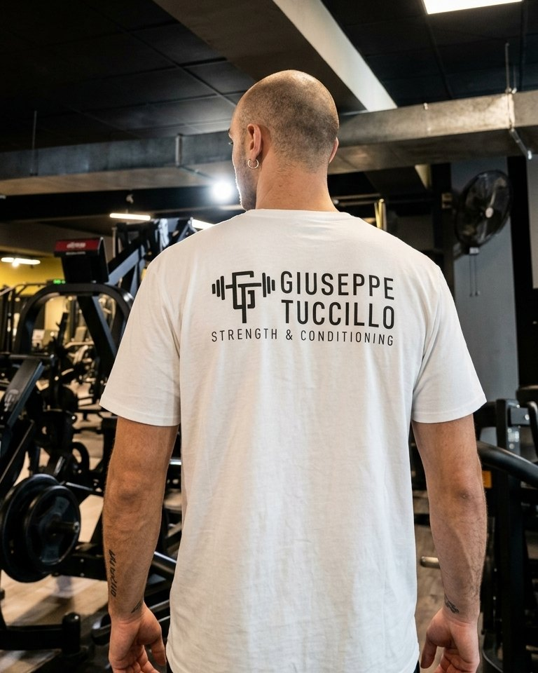

Personal Trainer · Napoli e online
Vuoi diventare la macchina perfetta?
Postura, respiro, mobilità e forza. Ti insegno a usare il tuo corpo per come funziona: l’estetica è una conseguenza.
- Laureato in Scienze Motorie
- Personal Trainer FIPE
- Napoli e online
Prima la funzione. Poi l’estetica.
Un corpo che funziona bene si muove meglio, regge il carico degli anni e, di conseguenza, cambia anche all’esterno. Non ti do una scheda da eseguire a occhi chiusi: ti spiego cosa fai, perché lo fai e come farlo bene. Il cosa, il perché e il come.
Il metodo
Quattro cose su cui lavoriamo
-
Assetto
Postura e mobilità. Come ti allinei e quanto liberamente ti muovi: la base su cui poggia tutto il resto.
-
Motore
Respiro e resistenza. Diaframma, muscoli respiratori e sistema cardiovascolare: l’energia con cui affronti allenamento e giornata.
-
Potenza
Forza funzionale. Forza costruita per uno scopo, con tecnica e carichi nel rispetto della biomeccanica. L’ipertrofia arriva di conseguenza.
-
Pilota
Consapevolezza. Imparare a sentire e controllare il movimento, per capire cosa stai facendo e non dipendere da una scheda.
Come lavoro
Quattro passi, nessuna sorpresa
-
Mi scrivi
Compili il modulo qui sotto o mi scrivi su Instagram. Nessun impegno.
-
Call
Ci sentiamo per capire cosa cerchi, com’è la tua giornata e se posso aiutarti.
-
La proposta
Ti propongo un percorso. Poi decidi tu.
-
Il check
Guardo come respiri e come ti muovi. Da lì nasce il tuo programma. È compreso nel percorso.
Per chi è
Prima di scrivermi
Fa per te se
- vuoi capire come funziona il tuo corpo, non solo seguire una scheda;
- per te la funzione viene prima dell’estetica;
- sei disposto alla costanza e a farti spiegare il perché di ogni scelta;
- parti da qualsiasi livello: non serve essere già in forma.
Non fa per te se
- cerchi un risultato estetico in poche settimane;
- vuoi una scheda da eseguire senza capire cosa stai facendo;
- cerchi una diagnosi o una cura: non sostituisco il medico né il fisioterapista;
- ti aspetti promesse assolute: ogni persona è diversa.

Chi sono
Giuseppe Tuccillo
Sono Personal Trainer FIPE e laureato in Scienze Motorie all’Università Parthenope di Napoli; ora proseguo con la magistrale. Mi occupo di esercizio finalizzato alla funzione: postura, respirazione, mobilità, forza, salute articolare e longevità.
Credo che chi si allena debba capire cosa sta facendo. Per questo ti spiego sempre il perché delle scelte, e resto aperto al confronto.
- Laurea in Scienze Motorie Università Parthenope, 2025
- Personal Trainer FIPE Qualifica federale
- Napoli e online Di persona e a distanza
Domande
Prima che tu me lo chieda
Devo essere già in forma?
No. Si parte da dove sei: il check iniziale serve proprio a capire il tuo punto di partenza.
Che differenza c’è rispetto a una scheda già pronta?
Non ti consegno solo una scheda: ti spiego cosa fai, perché lo fai e come farlo bene. Si lavora su postura, respiro, mobilità e forza, e l’estetica arriva come conseguenza.
Ho un fastidio o un dolore: posso allenarmi?
Dipende dal caso, e non sono un medico. Il check iniziale serve a capire come muoverti in modo sensato e, quando serve, ti consiglio di sentire prima il medico o il fisioterapista. Non sostituisco una diagnosi né una cura.
Posso seguirti online?
Sì. Lavoro a Napoli e online: il percorso si adatta a dove ti trovi e al tempo che hai.
Quanto costa?
Dipende dal percorso. Te lo spiego nella call, dopo aver capito cosa cerchi, così sai esattamente cosa stai valutando.
Inizia qui
Organizziamo una call
Ti ricontattiamo per fissare la call. Prima ci conosciamo, poi vediamo se e come posso esserti utile.
Scrivimi su WhatsAppoppure mandami una mail
Preferisci Instagram? Trovi Giuseppe su @giuseppetuccillo.pt.